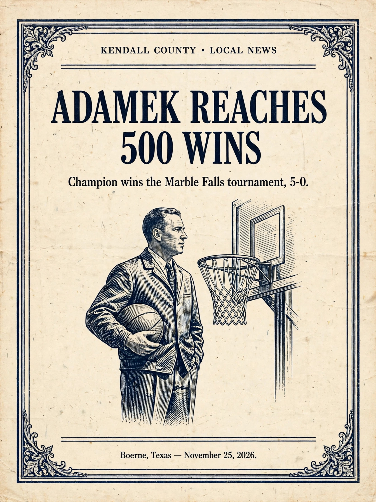

Adamek reaches 500 career wins
Adamek reaches 500 career wins
Boerne Champion won the Marble Falls boys basketball tournament with a 5-0 record, and one of the wins gave head coach Chris Adamek his 500th career victory, per the Boerne Star's November 25 report.
Boerne ISD Athletics marked the milestone on November 21 with a team photo of the Chargers holding a banner reading "Congratulations 500 Wins, Coach Adamek."
Champion opened the tournament with a 53-36 win over Austin McCallum. Travis Clark scored 15 points, Nick Plummer added 12, and Will Kliesing scored 10, per the Star.
The Chargers then beat College Station 49-31, with Clark and Plummer scoring 11 points each and Luke Garcia and Kliesing adding 9 points each.
Champion beat Fredericksburg 72-25. Plummer made six 3-pointers in the first quarter and finished with 20 points, per the Star.
The Chargers beat Liberty Hill 50-31, led by Gallardo with 17 points and Clark with 13.
Champion won the championship game over Georgetown East View 53-38. Clark scored 15 points, Gallardo added 13, and Plummer scored 10, per the Star.
Champion was 6-1 after the tournament. The Chargers played Churchill and Taft at home this week and host Kerrville on December 1, per the Star.